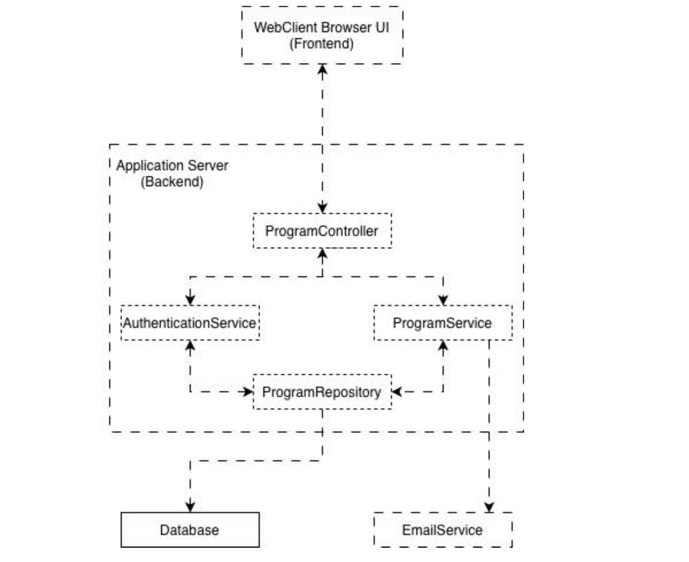

When I started working on various projects, one thing became clear: requirements gathering is an overlooked phase that's absolutely critical, especially for systems with multiple features and real users.
Let me illustrate with Revved Up, a web app I built with four other developers for an accessible fitness gym serving adults with mobility impairments and developmental disabilities.
Requirements gathering is the process of understanding and documenting what a client or user actually needs from a system before you build it. It's not about guessing what features would be cool; it's about asking the right questions, listening carefully, and understanding the real problems you're solving. This phase involves interviews, observations, documentation, and deep conversations with stakeholders. When done well, it prevents you from building the wrong thing.
The Problem
Revved Up's staff were managing exercise programs entirely manually. Trainers would search through physical files to find participant programs. The organization had strict role hierarchies:
- Kinesiologists (could do everything)
- Trainers (create and manage programs, assist participants)
- Students (view programs, assist participants only)
- Participants (view their own programs)
This complexity meant the system would be heavy on role-based access control (RBAC) from day one.
Our Approach to Requirements Gathering
We didn't rush into building. We spent 4 months out of our 12-month timeline on requirements gathering and design, roughly one-third of the project.
What we did:
- Interviewed 2 kinesiologists multiple times across the timeframe to understand their workflows and decision-making
- Observed 2 active gym sessions to see how trainers, students, and participants actually worked together
- Documented pain points in their manual system
- Shadowed staff to understand daily processes
This wasn't overkill. We became embedded in their process, understanding not just what they needed, but why they needed it.
System Architecture
From our requirements gathering, we designed a layered architecture that separated concerns and ensured security at every level.
The Frontend (WebClient UI)
Users interact with a clean, accessible web interface built with user needs in mind. Every action, from viewing programs to creating assignments to managing permissions, flows through this interface.
The Backend (Application Server)
The backend handles all system logic using a three-tier layered approach:
- Controller Layer Acts as the entry point, routing requests from the frontend to the appropriate service
- Service Layer Contains the core business logic
- Authentication Service manages user access and role verification
- Program Service handles program creation, templates, and assignments
- Data Access Layer Manages all database communication, ensuring data consistency and integrity

Why This Matters
This layered approach meant that access control was enforced at the service level, not the frontend. Users couldn't bypass permissions by manipulating the UI. The backend verified every request. This design prevented unauthorized access to sensitive program information across all four user roles.
The Result
The architecture ensured that kinesiologists could oversee all operations, trainers could manage only their assigned programs, students could assist without modifying data, and participants could only view their own programs. The system enforced these boundaries automatically.
RBAC Design from Real Understanding
Because we observed their workflows, we designed RBAC that matched their reality:
- Kinesiologists → Full admin access (research, oversight, all operations)
- Trainers → Create and manage programs for their assigned participants, read-only on others
- Students → Read-only access to exercise programs (assist without modifying)
- Participants → Access only their own programs
Without observing actual gym sessions, we might have given everyone read/write access or over-restricted trainers. Instead, we built permissions that mirrored their real workflow.
The Impact
Because we gathered requirements thoroughly, we avoided building features that sounded useful but weren't needed. For example, we initially assumed medical records would be a core feature but the client explicitly rejected this. Without proper requirements gathering, we would have wasted weeks building something they'd never use.
The Results
At handoff, the client requested only two minor changes:
- Change "participants" to "members" in the UI
- Update the logo
That's it. The system worked exactly as they expected because we invested time upfront understanding their needs.
If we had skipped requirements gathering, we likely would have built:
- Unnecessary features (like medical records storage)
- Poor RBAC design that didn't match their role hierarchy
- Workflows that didn't align with how they actually operated
- A system they'd need to heavily modify during implementation
The Lesson
Requirements gathering isn't a box to check. It's an investment. The time you spend understanding the problem prevents you from solving the wrong one.
Spend 25-33% of your project timeline on requirements gathering. It's worth it.
Learn more about Revved Up:
- Revved Up Official Site
- Revved Up Web App (invite-only access)